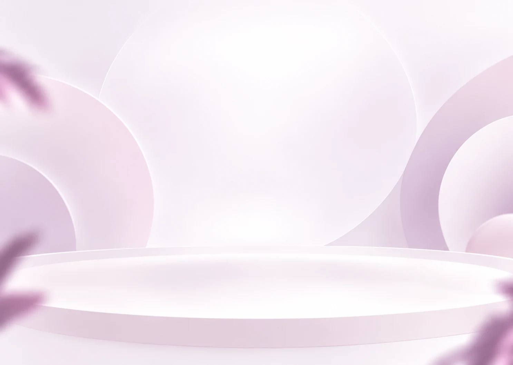
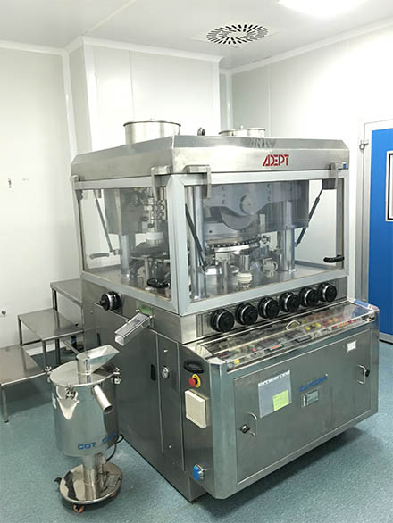

الهام از طبیعت
فرمهای زنده و رنگهای آرام در تجربهٔ ساپونین

ساپونین دارو ایران
نگاهی نزدیکتر به دنیای ساپونین.
THE SAPONINE APPROACH
شناخت محصولات، در تجربهای روشن و منظم
فرمهای زنده و رنگهای آرام در تجربهٔ ساپونین
شناخت هر محصول، از نام تا بستهبندی
معرفی محصولات همراه با منبع رسمی شرکت
مسیری ساده برای پرسش و بررسی همکاری
EXPLORE SAPONINE
با محصولات آشنا شوید؛
از تصویر واقعی تا اطلاعات رسمی هر محصول.
تصاویر واقعی و مشخصات بستهبندی از وبسایت ساپونین ایران دریافت شدهاند.

داستان ساپونین
پنجرهای به دنیای ساپونین دارو ایران؛ برای شناخت محصولات، دیدن جزئیات و آغاز گفتوگو.
در این بخش، داستان شرکت، مسیر شکلگیری مجموعه و معرفی تیم ساپونین در نسخهٔ نهایی روایت خواهد شد.
SAPO-ZINC 2%
برای آشنایی بیشتر، مشخصات محصول را ببینید.
LET’S GROW TOGETHER
برای آشنایی بیشتر و بررسی فرصتهای همکاری، مسیر گفتوگو را انتخاب کنید.
LET’S START A CONVERSATION
ساپونین دارو ایران
طبیعت، دانش، زندگی